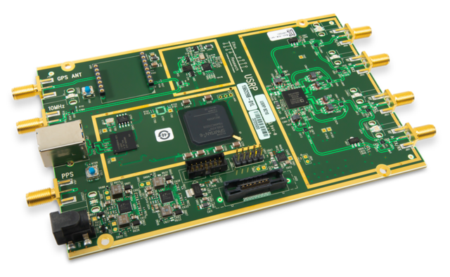
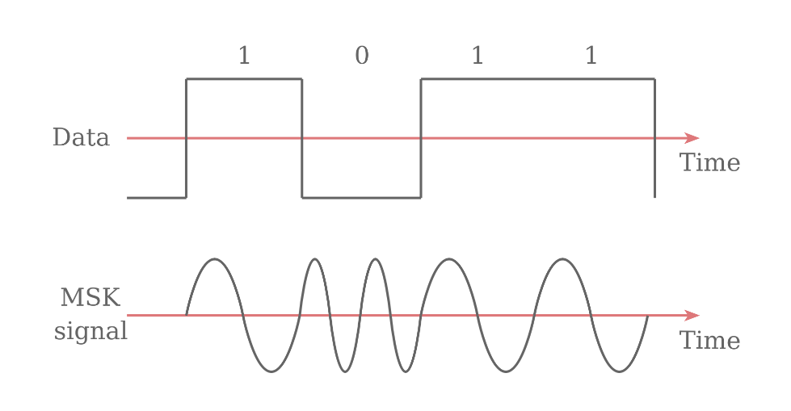
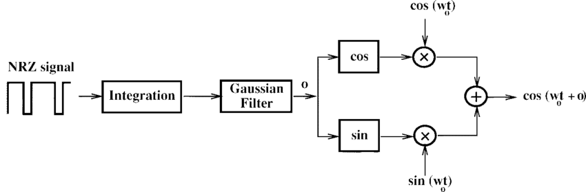

Telecommands Transmission
Introduction
The Spacelab-Transmitter is the software for the Spacelab’s Ground Station (GRS), it can transmit 14 telecommands as previously shown in the overview.
In order to not depend on another software to transmit telecommands, it was implemented a GMSK modulator in the code so that the Spacelab Transmitter works alone with the Software-Defined Radio.
The default Software-Defined Radio used in Spacelab is the USRP B210 so the code was written based in the integration with this specific SDR, and the modulation is the GMSK. In the code we have a class for USRP and for GMSK and also in every telecommand transmission function in the SpacelabTransmitter class we have implemented both of their codes.
{kind=link}

GMSK Implementation
Modulation and GMSK
In order transmit the data we need to modulate a carrier signal with the information, there are a lot of modulation schemes but the one used ins the Spacelab Trasnmitter is the GMSK, which means Gaussian Minimum Shift Keying.
GMSK is a continuous phase scheme where there are no phase discontinuities so the carrier varies by the signal. We have a sinusoidal wave and before the modulation stage it is used a gaussian filter. In order to implement a GMSK modulator we can create a Non-Return-to-Zero (NRZ) squence, so that we have the frequency difference between the logical ones and zeros.
{kind=link}

Image source: [1]
GMSK Modulation Block Diagram: [2]
{kind=link}

In the code of the GMSK class:
The class have the following functions:
init, the constructor;
modulate, which modulates an integer stream using GMSK modulation;
get_iq, which computes the IQ data of the GMSK modulated signal;
modulate_time_domain, which generates the GMSK modulated signal in time domain;
_gaussian_lpf, which generates filter coefficients of Gaussian low pass filter (used in gmsk_mod);
_int_list_to_bit_list, which converts a integer list (bytes) to a bit list.
In the code of the telecommands transmission:
In all telecommands functions in the SpacelabTransmitter class we have the following line:
mod = GMSK(0.5, 1200)
Which means that we have bit period (BT) = 0.5 and the desired data rate in 1200 bps. BT and baudrate can be configured but in the example we have GOLDS-UFSC with those values depending on the communication link.
Integration with USRP SDR
Software-Defined Radio
The IEEE considers Software defined to be refered to the use of software processing within the radio system or device to implement operating (but not control) functions and Software-Defined Radio (SDR) a radio in which some or all of the physical layer functions are software defined. [3]
As said before,the SDR used in Spacelab transmissions to satellites is the USRP B210 and the modulation used is the GMSK.
USRP
Means Universal Software Radio Peripheral, it’s a family os SDRs designed by the Ettus Research and NI. The B210 has a continuous frequency coverage from 70 MHz to 6 GHz [4], which covers the frequencies used by the Spacelab’s satellites.
References
Viswanathan, Mathuranathan. Digital Modulations Using Python. 1st ed., vol. 1, Independently published, 2019.
Turletti, Thierry. (1996). GMSK in a nutshell.